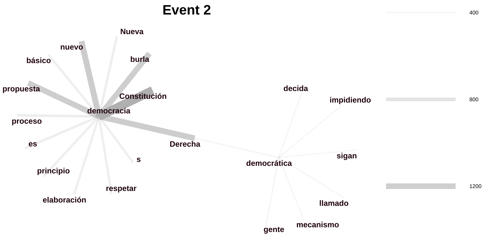

Meeting Report: CHile Case
Department of Global Studies
Monday, the 17 of April, 2023
Key Dates in the Social Movement of Chilean Mobilizations
Constructing a Co-occurrence Network Based on the Word ‘Democracy’ in a Text Corpus
Merging Synonyms
Visualizing Co-occurrence Frequency with Network Analysis
Completed: 18 Oct 2019 (17 Oct 12:00 - 19 Oct 12:00), 25 Oct 2019 (24 Oct 12:00 - 26 Oct 12:00) and 15 Nov 2019 (14 Nov 12:00 - 16 Nov 12:00)
Processing: 31 Sep to 2 Oct 2019 (31 Sep 12:00 - 3 Oct 12:00), 25 Oct 2020 (24 Oct 12:00 - 26 Oct 12:00), 14 May 2021 to 16 May 2021 (13 Oct 12:00 - 17 Oct 12:00), and 3 Sep to 5 Sep 2022 (2 Oct 12:00 - 6 Oct 12:00)
Word Selection: democracia, demócrata, demócratas, democrática,democráticas, democrático, democráticos, democráticamente, democratización, democratizaciones, democratizador, democratizadora, democratizar, democratizada, democratizadas, democratizado, and democratizados.
Removal Stopword: RT, Rosalía (a singer), via, s, es
[rechazo, r3ch4z0], [pais, país], [histó, historico, histórico], [chilenos, chilenas, chilen@s], [sera, será], [subsidiario, subsidiaria, subsidiariedad], [participativo, participativa]
[água, agua], [nuevo, nueva], [demócrata, demócratas], [democrática, democráticas, democrático, democráticos], [democratización, democratizaciones]
[democratizador, democratizadora], [democratizada, democratizadas, democratizado, democratizados], [Derecho, derecho, Derechos, derechos]
[Derecha, Derechas, derecha, derechas], [#Apruebo, Apruebo, #apruebo, apruebo], [AsambleaConstiyente, #AsambleaConstiyente, AsambleaConstituyente, #AsambleaConstituyente, asambleaconstituyente, #asambleaconstituyente]
| doc_id | sentence | token | token_id | upos |
|---|---|---|---|---|
| 291707060 | No inventemos fantasmas, la #nuevaConstitución fortalece nuestra democracia | democracia | 9 | NOUN |
| 119426189 | RT @SiEvangelico: Mientras el #Apruebo confía en la participación democrática, el #Rechazo duda del Servel | democrática | 12 | ADJ |
| 2741685975 | @T13 Ya tenemos una NC democrática, 100% electa, paritaria, con normas aprobadas por 2/3. | democrática | 6 | ADJ |
| 104631792 | El nazi Felipe Kast es un peligro para la democracia de Chile. | democracia | 10 | NOUN |
| 90419140 | El nazi Felipe Kast es un peligro para la democracia de Chile. | democracia | 10 | NOUN |
| 151583320 | El nazi Felipe Kast es un peligro para la democracia de Chile. | democracia | 10 | NOUN |
| 71912964 | Que retorcido los comentarios de pepito, sin asco haría coro con Gonza de la carrera...Hay que cuidar la democracia. | democracia | 21 | NOUN |
| 51612261 | La democratización de los medios: más razones para votar #Apruebo https://t.co/Vcxk7eMNuN | democratización | 2 | NOUN |
| 1560402901159366656 | El nazi Felipe Kast es un peligro para la democracia de Chile. | democracia | 10 | NOUN |
| 1203458191453048832 | El nazi Felipe Kast es un peligro para la democracia de Chile. | democracia | 10 | NOUN |
| 982709922994454528 | El nazi Felipe Kast es un peligro para la democracia de Chile. | democracia | 10 | NOUN |
| 808498496219320320 | RT @Sinfiltros_tv: "Si gana el #Apruebo los cambios son posibles y hay una vía democrática instalada, en cambio con el #Rechazo son solo po… | democrática | 18 | ADJ |
| 3433711901 | @MartnAg41475365 @FranjaCiudadana Ya lo hemos visto bastante en los últimos a√±os, les hemos dado una paliza pol√≠tica y democrática, al menos 2 veces y el 4/9 vamos x el 3-0ü§£ Saludos‚úåüèΩüòÅ | democrática | 20 | ADJ |
| 226216733 | @jgalemparte @fernando_atria @Sinfiltros_tv Mira Gabriel, te invito a dejar de mentir, si hay un lugar donde no se puede realizar un diálogo democrático es precisamente ese bodrio de programa donde eres panelista. | democrático | 25 | ADJ |
| 407123986 | @javiparada @NonaFernandez todas las normas y articulos fueron aprobadas con más de lo propuesto (2/3) e incluso, hay votaciones en el pleno que alcanzaron los 147 votos, de un total de 154... si esto no es democrático y representativo, entonces de qué se trata? | democrático | 42 | ADJ |
Top 7 - Last 7
Comparison: 1 to 100, 200 to 500, 700 to 800
Dates: 18 Oct 2019, 25 Oct 2019 and 15 Nov 2019
Data Frame: Top 20 Co-occurrence
Co-occurrence Network: 18 Oct 2019 Between 1 and 200, 18 Oct 2019 between 200 and 500, 18 Oct 2019 between 700 and 800
| term1 | term2 | Co-Occurrence Windows |
|---|---|---|
| democrática | Estado | 2746 |
| democrática | social | 2230 |
| democrática | pais | 1603 |
| avanzar | democrática | 1540 |
| democrática | participativo | 1539 |
| democrática | oportunidades | 1504 |
| democrática | Derecho | 1101 |
| democrática | paso | 654 |
| democrática | sera | 568 |
| democrática | Derecho | 567 |
| democrática | República | 565 |
| democrática | solidaria | 565 |
| democrática | razo | 563 |
| actual | democrática | 545 |
| democrática | propone | 544 |
| democrática | Subsidiario | 544 |
| democracia | florece | 338 |
| democracia | medra | 338 |
| académicos | democracia | 336 |
| democrática | justo | 323 |
Data Frame: Top 20 Co-occurrence
Co-occurrence Network: 25 Oct 2019 Between 1 and 200, 25 Oct 2019 between 200 and 500, 18 Oct 2019 between 700 and 800
| term1 | term2 | Co-Occurrence Windows |
|---|---|---|
| democrática | Estado | 2739 |
| democrática | social | 2222 |
| democrática | pais | 1548 |
| avanzar | democrática | 1539 |
| democrática | participativo | 1537 |
| democrática | oportunidades | 1503 |
| democrática | Derecho | 1094 |
| democrática | paso | 654 |
| democrática | sera | 568 |
| democrática | Derecho | 567 |
| democrática | República | 565 |
| democrática | solidaria | 565 |
| democrática | razo | 563 |
| actual | democrática | 545 |
| democrática | propone | 544 |
| democrática | Subsidiario | 544 |
| democracia | florece | 338 |
| democracia | medra | 338 |
| académicos | democracia | 336 |
| democrática | digno | 277 |
Data Frame: Top 20 Co-occurrence
Co-occurrence Network: 15 Nov 2019 Between 1 and 200; 15 Nov 2019 between 200 and 500, 15 Nov 2019 between 700 and 800
| term1 | term2 | Co-Occurrence Windows |
|---|---|---|
| Constitución | democracia | 393 |
| democracia | nuevo | 259 |
| democracia | Derecha | 240 |
| burla | democracia | 231 |
| democracia | propuesta | 231 |
| democracia | proceso | 152 |
| democracia | diálo | 135 |
| democracia | Nueva | 135 |
| democracia | principio | 131 |
| básico | democracia | 130 |
| democracia | elaboración | 130 |
| democracia | es | 130 |
| democracia | respetar | 130 |
| democracia | s | 130 |
| democrática | Derecha | 69 |
| democrática | gente | 59 |
| decida | democrática | 58 |
| democrática | impidiendo | 58 |
| democrática | llamado | 58 |
| democrática | mecanismo | 58 |
